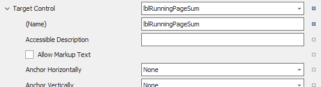

Carry Forward

Eine nicht nativ abgedeckte Funktionalität ist die des Übertrags. Um diese abzubilden, wurde das Custom Control CarryForward geschaffen.
Es ist dazu designed, den Textwert eines anderen Controls der vorigen Seite zu übernehmen. Sollte diese Aktion fehlschlagen oder unmöglich sein, kann es sich wie ein normales Label verhalten.
Note
Der Übertrag ist ausschließlich für ein Kopieren über Seiten hinweg ausgelegt. Übertragen von Werten z.B. zwischen Gruppen wird explizit nicht unterstützt.
Eigenschaften
Die Control spezifischen Einstellungen werden im Folgenden dokumentiert.
Target Control
Ein Verweis auf das Control, dessen Text kopiert werden soll. Im Editor ist eine Bearbeitung der Eigenschaften des Target Controls vom CarryForward-Control aus möglich. Hier sollte spezifisch das Summen-Feld selektiert werden, dessen Ergebnis auf die nächste Seite übertragen werden soll.

Print on first page
Bestimmt, ob das Control auf der ersten Seite des Reports angezeigt werden darf. Falls ja, fungiert es auf der ersten Seite als normales Label (da kein zu kopierender Text einer vorigen Seite existiert.)
Print on last page
Bestimmt, ob das Control auf der letzten Seite des Reports angezeigt werden darf.